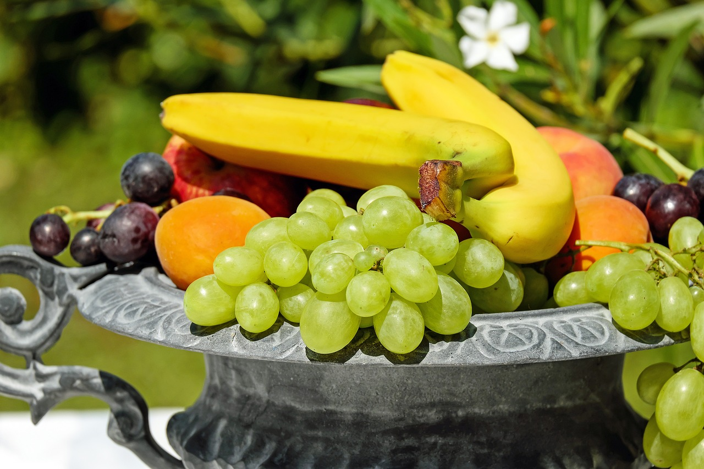
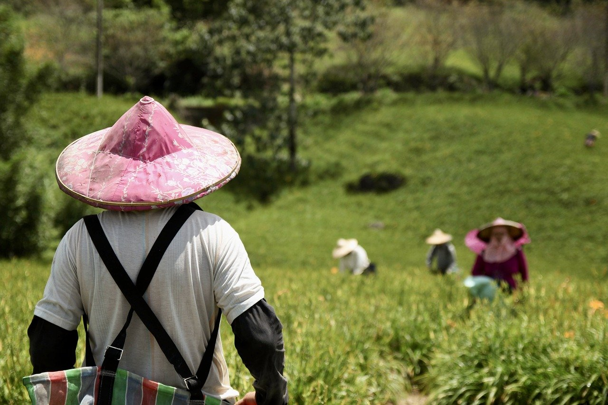
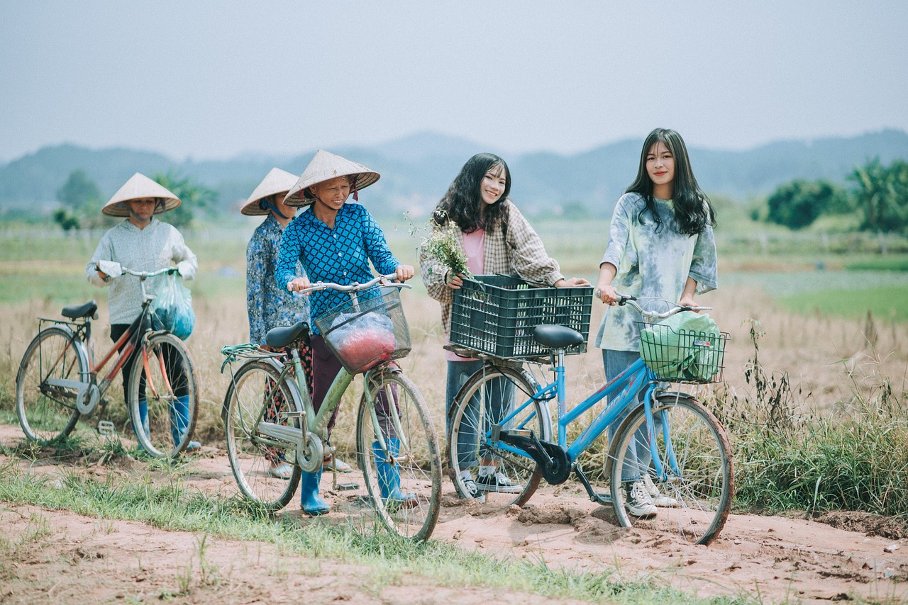

About Fruit Enthusiasts

Who We Are
We are Fruit Enthusiasts, a dedicated team passionate about exploring the vibrant world of fruits. From their health benefits to their diverse flavors, we share insights, recipes, and the joys of nature's sweetest offerings. Join us on a journey to discover and celebrate the deliciousness of fruits.
Our mission is to inspire and educate readers on the joys and benefits of fruits, offering insights for everyone from health enthusiasts to curious food lovers.
Our Team

Farmers
Our Farmers

Transporters
Our Transporters

Sellers
Our Sellers